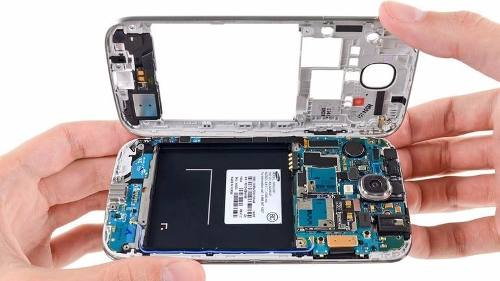

Cual es la vida útil de un teléfono celular?
La duración exacta de equipo celular es algo que no sabemos a ciencia cierta , pero cuando compramos un teléfono nuevo nos gustaría que dure el mayor tiempo posible. Pero tomando en cuenta el testimonio de muchísimas personas a las cuales les he realizado servicio a sus equipos, sabemos que no es así y que tarde o temprano dejará de funcionar.

Todos los celulares tienen fecha de expiración. La pregunta que nos hacemos es ¿Cuál es la duración de mi equipo? como lo dije anteriormente no se sabe exactamente cuando;La constante actualización y renovación de nuevos equipos por parte de los fabricantes, con mejores teléfonos celulares en un rango de pocos meses, habla mucho de la obsolescencia programada por parte de los mismos.
La duración media de un Equipo celular, en mi opinión personal es de mas o menos unos dos años, pasado este lapso, se empieza a notar que el equipo se pone lento, la batería dura menos, etc. También es importante considerar qué celular vamos a comprar,debería ser de marcas reconocidas y que tenga el suficiente soporte del fabricante.La duración de un celular es determinada generalmente por la calidad y gama del producto que compremos, por lo que se recomienda ampliamente comprar equipos de gama media y alta para evitar molestias con teléfonos baratos de dudosa calidad.